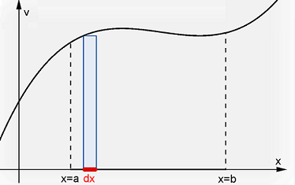
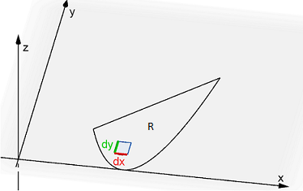
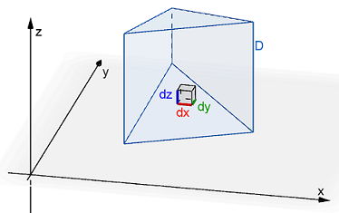
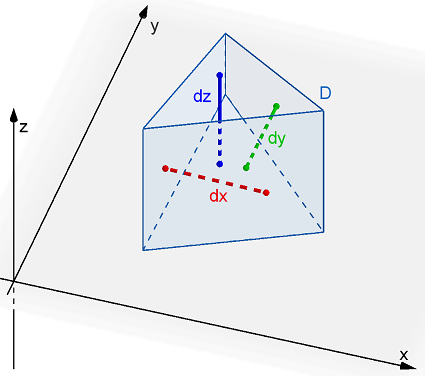
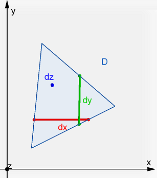
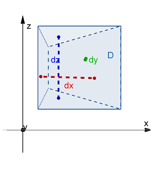
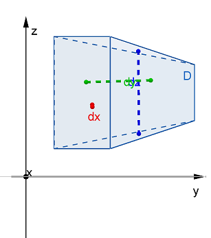

Triple Integrals
In the previous lesson, you looked at double integrals which extend integration over an interval on the \(x\)-axis to a region in the \(xy\)-plane. Now we want to further extend this to a solid in \(xyz\)-space.
| Visualization | Description |
|---|---|
|  |
A single integral computes the sum of the areas of infinitely many rectangles, each having an infinitely small width \(dx\), which is measured along an interval \(I\) on the \(x\)-axis. \[\underset{I}{\int}\,f(x)~dA\] |
|  |
A double integral computes the sum of the volumes of infinitely many boxes, each having a rectangular base area \(dA\) of infinitely small width \(dx\) and height \(dy\), measured over the region \(R\) in the \(xy\)-plane. \[\underset{R}{\mathop \iint }\,f(x,y)~dA\] |
|  |
A triple integral computes the sum of infinitely many hyper volumes using boxes of volume \(dV\), having length \(dx\), width \(dy\), and height \(dz\), measured over the solid \(D\) in \(xyz\)-space. \[\underset{D}{\iiint }\,f(x,y,z)~dV\] |
When using double integrals, recall that we could use \(dA=dy\,dx\) or \(dA=dx\,dy\), meaning we could change the order of integration. This was helpful when one order of integration was easier to setup and evaluate than the other order. The same is true with triple integrals, except there are now 6 options instead of just 2. Probably the most common order of integration would be \(dV=dz\,dy\,dx\), meaning we would integrate first with respect to \(z\), then with respect to \(y\), and lastly with respect to \(x\).
In the above illustration, suppose we are wanting to setup a triple integral over the region \(D\). The blue dz line stretches from the top of \(D\) to the bottom of \(D\), parallel to the \(z\)-axis. The green dy line stretches from the front of \(D\) to the back of \(D\), parallel to the \(y\)-axis. The red dx line stretches from the left face of \(D\) to the right face of \(D\), parallel to the \(x\)-axis. These three lines represent the direction of integration, their endpoints serving to mark the limits of integration that will be needed for the integrals.
When deciding which order to use, there are a couple things to keep in mind.
- Each step of integration eliminates a variable. So if you integrate the order \(dz\,dy\,dx\), the first (inner) integral will eliminate \(z\)'s from the remaining computations. This also means that the limits of integration can be expressions containing only \(x\)'s and \(y\)'s. The second (middle) integration will eliminate the \(y\)'s, leaving only \(x\)'s for the third integration, and the limits of integration can only contain \(x\)'s. The limits of integration for the third (outer) integral can only contain constants.
- Once you determine the first variable, the remainder of the setup can be viewed as a 2D integral in a plane. So if you integrate \(dz\,dy\,dx\), once you determine the limits of integration for \(dz\), doing the rest of \(dy\,dx\) can be done in the \(xy\)-plane.
- The hardest choice is which variable to integrate first. Try to pick a variable whose top and bottom remain the same over the entire solid. For example, in the image above, the top and bottom faces of the solid are both triangles - one directly over the other. So doing \(dz\) first would be the easiest. Doing \(dx\) first would be more complicated since the the right face may change depending on where you draw the red line (the left face is always the same, but the right side has a front face and a back face due to the triangular shape).
- Try to draw what the solid \(D\) would look like when viewed from each of the 3 coordinate planes (\(xy\)-plane, \(xz\)-plane, and \(yz\)-plane). This can help determine the best order of integration as well as the limits of integration.
The following images show the solid \(D\) above from each of the three coordinate planes. Again, notice that when viewed from above the \(xy\)-plane, the 3D solid appears to be a triangle in the \(xy\)-plane. By integrating first with respect to \(z\), we eliminate the \(z\)-component and can then focus on integrating the triangular region in terms of just \(x\) and \(y\). When integrating in the \(x\) or \(y\) directions, we will need to use two separate integrals since the region does not have a uniform top/bottom or left/right side relationship.
| xy-Plane | xz-Plane | yz-Plane |
|---|---|---|
|  |  |  |
Given a continuous function \(f(x,y,z)\) through a solid region \(D\) in \(ℝ^3\) whose project \(R\) onto the \(xy\)-plane can be expressed using rectangular coordinates, the triple integral of \(f\) over \(D\) can be computed using the following integral where \(g_1(x,y) \le z \le g_2(x,y)\), \(h_1(x) \le y \le h_2(x)\), and \(a \le x \le b\).
\[\underset{D}{\mathop \iiint}\, f(x,y,z)~dV = \int_{a}^{b} \int_{h_1(x)}^{h_2(x)} \int_{g_1(x,y)}^{g_2(x,y)}\, f(x,y,z)~dz~dy~dx\]The following videos work through several examples of setting up and evaluating triple integrals. Note that there is often not only one way to setup each problem.
Sometimes it can be helpful if we switch the order of integration, maybe because we realize that the problem would be easier with a different order. The following video shows how to change the order of integration.
Mass & Inertia
This next video works through an application of triple integrals - finding the mass of an object of variable density.
We can extend the above example to not only find the mass of a solid of variable density \(\delta (x, y, z)\), but to also find its center of mass.
| Mass | Moments about the Coordiate Planes | Center of Mass |
|---|---|---|
| \[m=\underset{D}{\mathop \iiint }\,\delta (x,y,z)~dV\] | \[M_{yz}= \underset{D}{\mathop \iiint}\,x \delta (x,y,z)~dV\]\[M_{xz}= \underset{D}{\mathop \iiint}\,y \delta (x,y,z)~dV\]\[M_{xy}= \underset{D}{\mathop \iiint}\,z \delta (x,y,z)~dV\] | \[ \left( \bar{x}, \bar{y}, \bar{z} \right) = \left(\frac{M_{yz}}{m},\frac{M_{xz}}{m},\frac{M_{xy}}{m}\right)\] |
We can also compute moments of inertia around the coordinate axes using the following formulas. Notice the similarities between these and the formulas that we just saw for inertia in 2D space about the axes and the origin.
| About the \(x\)-Axis | About the \(y\)-Axis | About the \(z\)-Axis |
|---|---|---|
| \[I_x = \underset{E}{\mathop \iiint}\,(y^2+z^2) \rho (x,y,z)~dV\] | \[I_y = \underset{E}{\mathop \iiint}\,(x^2+z^2) \rho (x,y,z)~dV\] | \[I_z = \underset{E}{\mathop \iiint}\,(x^2+y^2) \rho (x,y,z)~dV\] |
The following video works through an example of a moment of inertia of a solid around the z-axis.